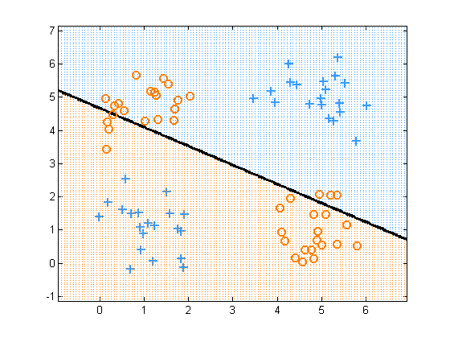
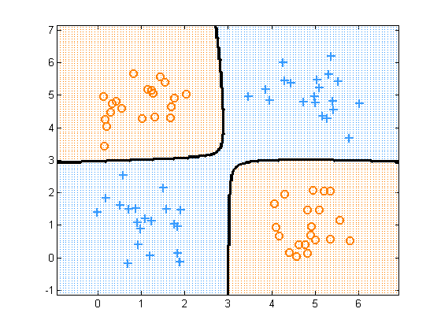

Contents
function logregXorDemo()
[X, y] = createXORdata();
lambda = 1e-2;
Linear Features
model = logregFit(X, y, 'lambda', lambda);
yhat = logregPredict(model, X);
errorRate = mean(yhat ~= y);
fprintf('Error rate using raw features: %2.f%%\n', 100*errorRate);
plotDecisionBoundary(X, y, @(X)logregPredict(model, X));
printPmtkFigure('logregXorLinear')
Error rate using raw features: 49%

RBF Features
rbfScale = 1;
model = logregFit(X, y, 'lambda', lambda, 'kernelFn', @kernelRbfSigma, 'kernelParam', rbfScale);
yhat = logregPredict(model, X);
errorRate = mean(yhat ~= y);
fprintf('Error rate using RBF features: %2.f%%\n', 100*errorRate);
predictFcn = @(Xtest)logregPredict(model, Xtest);
plotDecisionBoundary(X, y, predictFcn);
printPmtkFigure('logregXorRbf')
Error rate using RBF features: 0%

end